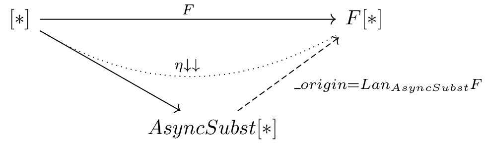

Categorical interpretation for substitutions in async call chains:¶
Substitutions in async call chains is described in Special semantics for substitutions in call chains.
Let’s look at the next diagram:

Let we have hight-order function \(f: A\to B\) (example: \(f = withFilter: Iterable \to WithFilter\)); then direct async transform will give us an async variant of \(f\) – \(f_{async}\) (example: naive implementation of withFilter_async), and substituted is \(f'_{async}\) (example - our delayed implementation of withFiter_async). 1.
- 1
Here we write AsyncSubst instead CallChainAsyncSubst to save space on the picture.
For any function \(h: B->C\) from B to any C, we have an image of h in F[B]: \(h_F = F.map(h)\) and in AsyncSubst: \(h_{AsyncShift}\). The diagram is commutative: * \(h_{F} * f_{async} = h_{AsyncSubst} * f'_{async}\) . (Example - h is flatMap, our implementation perform the same operation as usual flatMap, but in one batch with filtering). * \(\_origin * h'_{AsyncSubst} = h_{AsyncSubst}\) . (Example - h is withFilter \(h'_{AsyncSubst}\) is an implementation construct an next delayed instance with two predicates ).
Moving to relations between functors, shown on the next diagram:
We can notice that _origing is a left Kan extension of F along AsyncSubst.
- This technique can be applied for cases where direct cps transform is impossible.
Example: cps transform of functional expression: cps[S=>T], will give us not F[S=>T], but S=>F[T]. We can’t receive F[T=>S] from T=>F[S], but can define an AsynSubst[T=>S] with implementation of apply, andThen and compose.